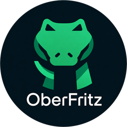
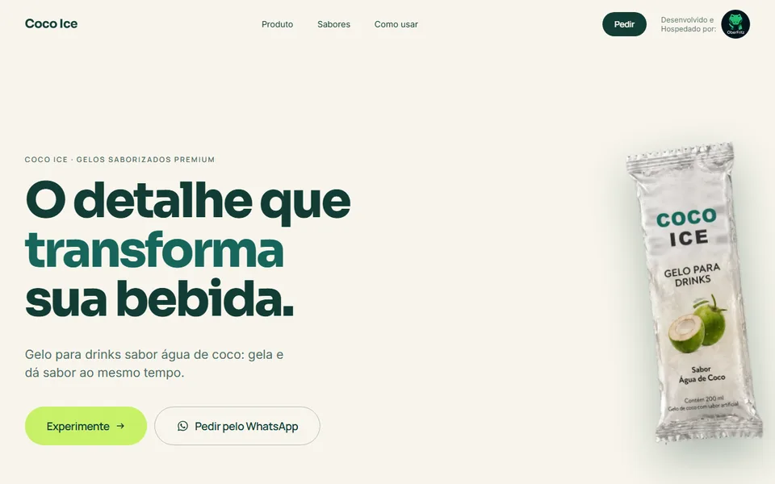
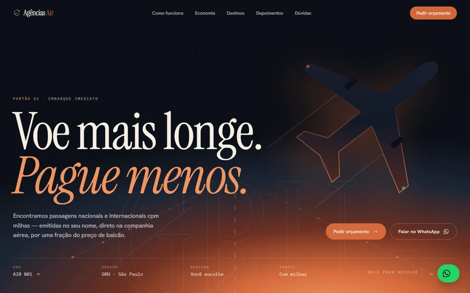
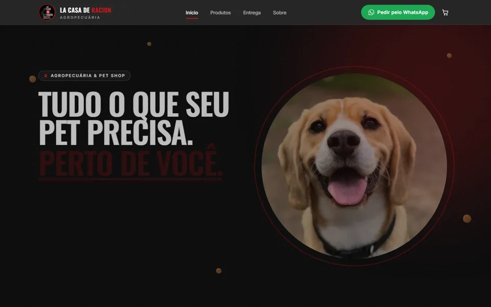

Dados · BI
Painel de operação em tempo real
Indicadores de produção, vendas e estoque em uma tela só, alimentados direto do ERP. Fim do relatório montado à mão toda segunda-feira.
PythonPostgreSQLAPI ERP

repertório
Cada projeto abaixo está no ar. Clique em “Ver rodando” para navegar no sistema de verdade — no computador, no tablet ou no celular — sem sair desta página.
Indicadores de produção, vendas e estoque em uma tela só, alimentados direto do ERP. Fim do relatório montado à mão toda segunda-feira.
Aplicação, banco e serviços isolados em containers, com publicação automatizada e rollback em um comando.

ao vivoLanding page com produto em 3D que acompanha a rolagem, apresentação dos sabores e pedido direto pelo WhatsApp.

ao vivoSite institucional com comparativo de economia, rotas populares, FAQ e formulário de cotação que envia o pedido direto pelo WhatsApp.

ao vivoCatálogo de rações, petiscos e acessórios por tipo de animal, carrinho no site e pedido finalizado direto pelo WhatsApp, com entrega ou retirada.
Conte onde o processo trava hoje. Na primeira conversa a gente já aponta o que dá para automatizar primeiro.